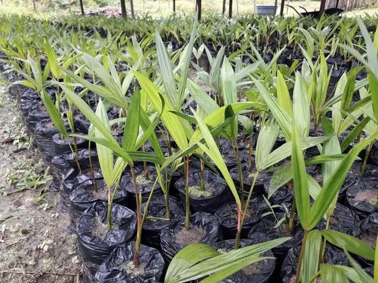
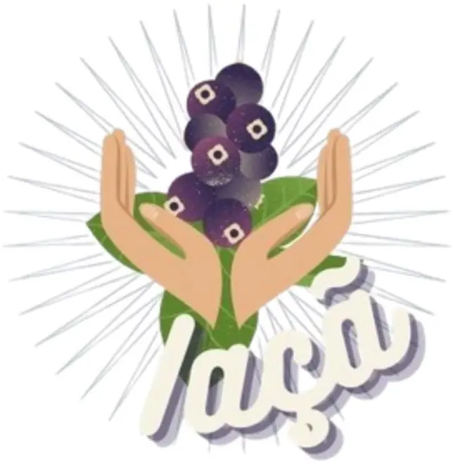
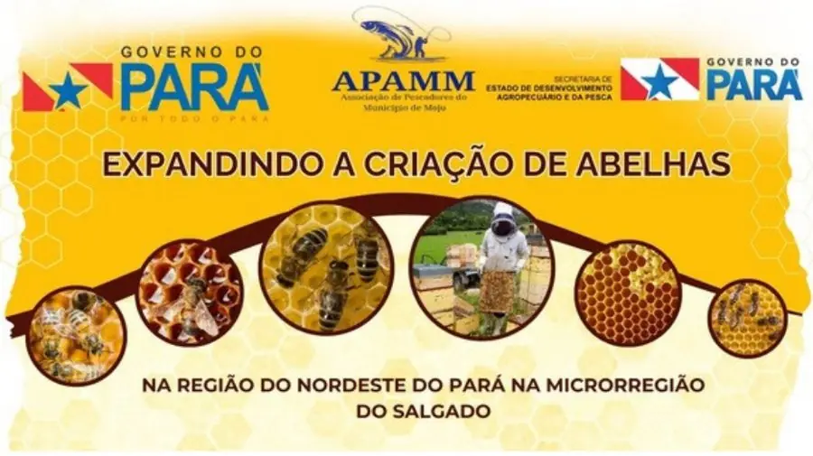
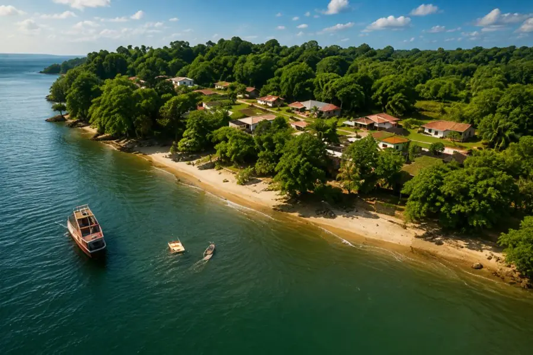
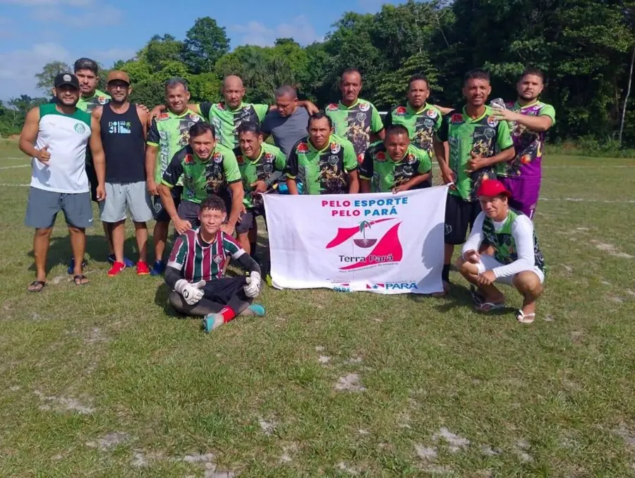
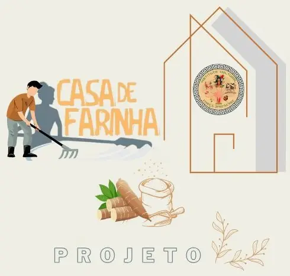
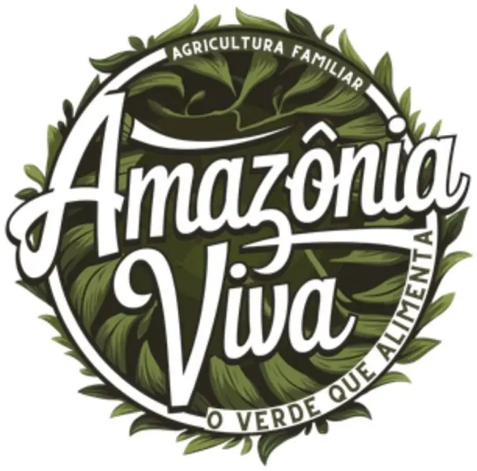
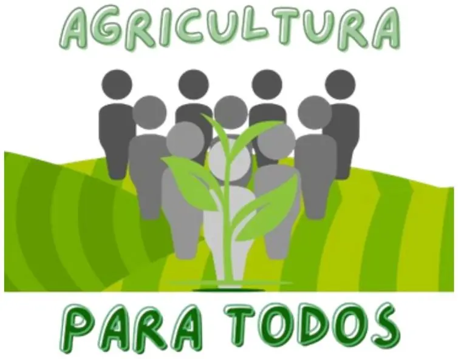

Projeto SocialProjeto Social
Projeto SocialProjeto Social Projeto Social
Projeto SocialSuper Liga Esportiva, Esporte em Ação
Ver projeto → Projeto Social
Projeto SocialFelicidade não tem idade
Ver projeto → Projeto Social
Projeto SocialGol de ouro: educando pelo esporte
Ver projeto →
Agricultura FamiliarAçaí o Fruto Amazônico
Desenvolvido com foco no fortalecimento da cadeia produtiva do açaí.
Ver projeto → Projeto Social
Projeto SocialGol de Esperança
Ver projeto →
CulturalIaçá
Valorização das tradições, dos saberes e da cultura ribeirinha como expressão da identidade amazônica.
Ver projeto → Agricultura Familiar
Agricultura FamiliarIlhas Marajoara — Açaí, Farinha e Cuia
Fortalecimento das cadeias produtivas tradicionais do Marajó, agregando valor à produção regional.
Ver projeto → Ambiental
AmbientalEco Vida Plantar
Projeto de reflorestamento e educação ambiental com valorização das espécies nativas e participação comunitária.
Ver projeto →
Agricultura FamiliarExpandindo a Criação de Abelhas
Fortalecimento da apicultura familiar por meio de manejo sustentável e valorização da produção de mel.
Ver projeto →
AmbientalCotijuba Mais Verde
Ações de recuperação ambiental e arborização para promover sustentabilidade e valorização do território.
Ver projeto →
Projeto SocialBola pra frente
Futebol para veteranos que promove bem-estar físico e mental, integração social e camaradagem.
Ver projeto → Feminino
FemininoMulher cidadã II
Ver projeto → Cultural
CulturalMulher cidadã I
Ver projeto → Agricultura Familiar
Agricultura FamiliarPlantando esperança
Ver projeto →
Projeto SocialCasa de farinha
Ver projeto →
AmbientalAmazônia Viva
Iniciativa voltada à conservação da floresta e ao uso sustentável dos recursos naturais da Amazônia.
Ver projeto →
Agricultura FamiliarAgricultura Para Todos
Fortalecimento da agricultura familiar por meio de acesso a crédito, mercado e assistência técnica.
Ver projeto →